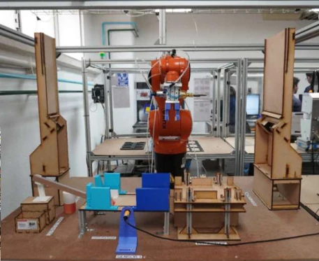
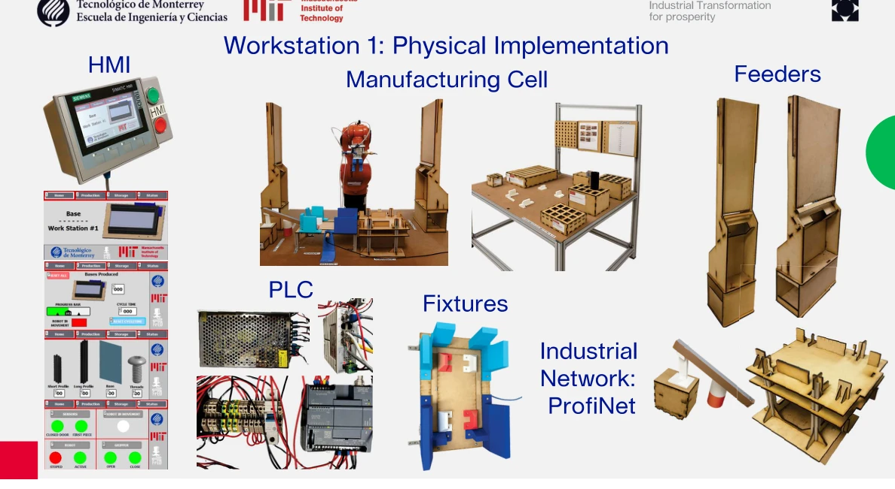

Making assembly work as a system.
Worked on the base-assembly workstation of a collaborative automated production line.
Physical integrationInside the project.
Selected visuals from the academic team’s original presentation. Captions distinguish physical hardware from simulation.


The challenge
Coordinate robotic handling, fixturing and automatic screwdriving with PLC-controlled sensors and pneumatics.
My contribution
- Worked on KUKA robot routines for base handling and assembly.
- Developed fixtures and 3D-printed gripper components for workstation operations.
- Programmed Siemens PLC / HMI functions and coordinated sensor and pneumatic signals.
- Built a Process Simulate digital twin and supported physical assembly, testing and documentation.
What the visuals show
The photographed workstation combines a KUKA robot with fixtures and an assembly area. My focus was Workstation 1 within the larger team production line; the wider line and its other stations were collaborative work.
Engineering focus
Treat the robot, tooling and PLC sequence as one coordinated workstation.
Outcome & scope
The team assembled ten units during project testing; controller faults affected two units. No cycle-time or production-quality claim is made here.
Professional experience and academic collaborations are labeled separately. Organization names identify the project context and do not imply endorsement.